Developing a useful set of supply chain metrics is key to achieving desired results. The place to start is to understand the objectives of any measurement system. Choosing the right way to present measurement results can strongly influence their effectiveness, so balanced scorecards, dashboards, and other tools are covered. Since use of a formal measurement methodology can help ensure a complete measurement system, the Supply Chain Operations Reference (SCOR®) Digital Standard and the related Digital Capabilities Model for Supply Networks are also discussed here.
Supply Chain Metrics and Reports Road Map
Here we start with the big picture of why measurement systems are useful and then introduce supply chain metrics. Supply chain metrics are useful when there are sound processes for gathering performance data, analyzing that performance, and then using the data to improve performance. Metric selection and a metric selection framework are also discussed.
Measurement System Basics
You get what you measure. When designing metrics, it is important to understand that people are motivated to improve what the organization chooses to measure and to ignore or deprioritize what the organization fails to measure. The second part of this statement references the unintended consequences lurking behind the statement "you get what you measure." To ensure that businesses are getting the results they want while minimizing unintended consequences, organizations often turn to well-established process-oriented measurement models because they are thorough yet not overly complex or cumbersome. One of the more widely accepted and used process-oriented models is the Supply Chain Operations Reference (SCOR®) Digital Standard.
The basic objectives of any measurement system are as follows:
- Monitoring.
- Track actual system performance by observing and gathering data that is relevant to business objectives.
- Controlling.
- Compare data to appropriate standards for performance to determine when the system needs modification or attention, identifying causes, and adjusting systems to get back on course or to continuously improve the course.
- Directing.
- Develop an understanding of actual human motivation and what incentives motivate people to work toward organizational goals while minimizing unintended consequences. In other words, measurement becomes a tool to enable effective leadership and management of the workforce.
Performance measures as a whole should be objective, consistent, and quantified. They should measure at least two parameters, such as a quantity and a time (e.g., delivery by a particular day). They also require target values or standards so that the person or organization being measured and the person(s) doing the monitoring and controlling can objectively gauge relative success.
Data are turned into information by placing them in context and analyzing them. Once this occurs, the right people need to get the information that is relevant to them in the right format. The timing of when the information becomes available is also relevant to the decision. Some communication methods need to be near real-time, while others are designed for periodic appraisal.
Supply Chain Management Metrics
Measurement and feedback is essential for any supply chain, not only to continuously improve systems for greater efficiency and effectiveness but also to allow the systems to adapt to change. It is important to select measurements that will give proper incentives to the parties being measured in the areas of customer-focused, financial, and operational metrics for the supply chain.
Metrics should cut across functions and organizations in the supply chain to promote collaboration and interdependencies. For example, the finance function is concerned with the cost of various supply chain operations and determines the break-even point when an operation could become profitable. Finance is also involved in monitoring suppliers and customers for financial distress to provide early warning of trouble.
Measuring and communicating the performance of the supply chain can provide benefits such as the following:
Control of processes and employees
Management or influence over suppliers and customers
Reporting to managers and external sources (e.g., financial reporting)
Sharing demand information with suppliers and supply information with customers
Communication of expectations and problems
Learning and continuous improvement
Each organization will devise its own set of performance measurements for customer, operational, and financial measures. The following list shows an example of a set of performance metrics one organization uses, many of which are discussed elsewhere (possibly under slightly different names):
% orders delivered on requested delivery date
% orders delivered on promised delivery date
Production schedule performance
Production schedule stability
Forecast accuracy
Forecast bias—performance to plan
Forecast bias—tracking signal
Product mix
MAPE—mean absolute percentage error
MAD—mean absolute deviation
Order fulfillment lead time
Total supply chain cost
Cost of goods sold (COGS)
Cash-to-cash cycle time
Inventory days of supply
Days' sales outstanding
Days' payables outstanding
Processes for Measuring, Analyzing, and Improving Supply Chain
All along the supply chain, managers are responsible for measuring results and ensuring that they're on target to meet their functional goals as well as support the organizational and strategic plans. These plans may involve some form of continuous improvement initiative. Getting these things to move from plans or project to reality is often a challenge, so change management is often needed.
The key processes that supply chain managers need to be able to perform related to measuring, analyzing, and improving the supply chain are
Gathering performance data
Analyzing performance
Improving performance.
Prerequisites to these processes involve setting measurement system objectives and planning what to measure:
- Determining organizational objectives and how to measure and incentivize their success
- Selecting metrics that are meaningful and promote desired behavior, yet are feasible and cost-effective to measure
Gathering Performance Data
The process of gathering performance data involves the following steps:
- Determining the data to be collected as inputs to chosen metrics
- Finding source(s) for the necessary data—including allowed external sources (e.g., reporting agencies, suppliers)
- Assessing data collection feasibility; for example, for customers/suppliers:
Assessing availability, quality, and cooperation levels
Planning and executing data collaboration projects when feasible
Finding alternative data sources (i.e., proxies) as needed
Assessing data accuracy impact (For example, distance-based freight rates might be used unless actual freight rates would significantly improve decisions.)
Choosing the method of gathering each type of data (e.g., manual estimate, manual measurement, automated information system)
Determining the method of reporting the data (e.g., who, how, what, and when for manual or what events trigger automatic submission)
Setting up these processes and systems as needed (e.g., using projects)
Gathering and submitting data during normal operations
Entering manual data in information systems/tools in the proper format and using controls to minimize data entry errors
Validating data for relevance, reliability, and accuracy (e.g., compare to historical data to see if wide discrepancies exist; if so, investigate)
Archiving the data in a role-restricted repository (database) for ease of access and reference by appropriate parties
For example, performance data could be shipping and arrival dates, percent completion of a manufacturing process, number of defects, actual costs, and so on.
In another example, financial data for suppliers might include information directly from suppliers and/or their publicly available financial statements as well as data from credit reports, bank references, or third-party ratings such as Moody's, Fitch's, S&P Global, or Dun & Bradstreet.
Analyzing Performance
The process of analyzing performance involves the following steps:
- Formulating questions that the performance information or model outputs should be able to answer
- Turning data (raw observations and measurements) into information:
- Placing it in context (e.g., comparing to baselines, goals, benchmarks, or past results)
- Using the data as inputs for ratio analysis, formulas, or models
- Using the data for comparisons across supply chain organizations to see if there is a net improvement for all
- Validating information and tools for relevance, reliability, and accuracy (i.e., compare ratios to historical ratios or use historical data in models)
- Making interpretations (e.g., viable options, status, trends, or forecasts)
- Selecting formats and media appropriate to the information and audience
Preparing reports at predetermined intervals and on request
Presenting reports
Performance information might include shipment status, fill rate, on-time delivery variance, forecasted number of quality rejects, and so on. Reports can take the form of dashboards, regular status reports, updates, recommendations, formal presentations, and so on.
Improving Performance
The process of improving performance involves the following steps:
Accepting feedback from decision makers and supply chain participants
Preparing recommendations for short-term or incremental improvement
Enacting approved short-term or incremental changes
Periodically auditing processes (including the measurement process itself) against strategic or long-term objectives
Preparing recommendations for changes to processes or metrics that better align with strategic or long-term objectives
Preparing recommendations as needed for making continuous improvement become part of the organization's philosophy (e.g., lean, six sigma)
Using change management and/or project management to enact strategic or long-term improvements to processes or performance
Selecting Metrics Related to Supply Chain Strategy
Since it's not feasible to measure and monitor every supply chain goal or activity, managers have to choose a reasonable number of metrics that are related to supply chain strategy. Some of the strategic attributes of supply chains are velocity, visibility, variability, collaboration, trust, customer focus, and flexibility. Other attributes include security (risk management), compliance with all regulations, and environmental excellence (with a well-developed, profitable reverse supply chain). Any of these attributes could be woven into strategy, expanded into specific objectives, and subjected to measurement.
For instance, if the supply chain's strategy were to increase the velocity with which information flows from the end customer back through the chain, objectives would be developed to assess the current state of the system and identify metrics to measure progress toward a specific goal. The key metric might be a measure of the actual velocity of communications. The goal could be to substitute reports from intermediate customers with the direct transfer of data from the point of sale via scanners, barcodes, and the internet. A number of enabling objectives might be put in place for buying equipment, training staff, and so on. This would be a true supply chain metric, because the process it measures crosses nodes.
What is being measured creates incentives and perhaps unintended consequences. For example, a purchasing agent whose performance is being measured on purchase price variance will work to minimize that variance but could be motivated to do so in ways that harm other objectives, like buying in bulk to get discounts and always selecting the lowest bidder. The selected metrics would introduce a side effect of increasing inventory and reducing quality. Organizations that used these as the primary purchasing metrics are moving away from cost and toward value for the final customer. While this is a more difficult metric to measure because it requires information from supply chain participants, it produces results that better align with objectives.
Often a selection of metrics that are tailored to a specific supply chain is what is needed. For example, inventory turnover and cash-to-cash cycle time might be two of several metrics, and these would promote ordering in wise quantities. They would then be balanced with other metrics such as on-time delivery, purchase price, and total cost to produce a well-rounded incentive system. So how do you select these metrics? One can use trial and error over time, but this can be costly, so many organizations instead use a framework or methodology when designing metrics.
Metric Selection Framework
A framework for helping organizations select the best metrics to use was developed by Griffis, Cooper, Goldsby, and Closs in an article titled "Aligning Logistics Performance Measures to the Information Needs of the Firm." In this framework oriented toward logistics metrics, there are three areas to focus on when prioritizing metrics. Each is a continuum, or range between two opposite forces:
- Competitive basis: responsive versus efficient.
- Greater responsiveness tends to lower efficiency.
- Measurement focus: strategic versus operational.
- Priority can be more toward selecting the best overall strategy, such as total cost of ownership, or on efficient daily operations.
- Measurement frequency: diagnostic versus monitoring.
- Diagnostic measurements are used to decide between alternatives, while monitoring measurements are used to assess daily performance.
The idea is to assess where the organization falls as to its competitive basis and then to determine where each metric falls on each of the second two ranges. Organizations can then select metrics that match their competitive basis. They could also use such a framework to help decide which metrics should be used when they want a strategic focus and which are more appropriate for daily operations management.
Once a company determines the metrics to use, these metrics need to be communicated throughout the extended enterprise along with the benefits of achieving them.
Scorecards, Dashboards, and Performance Metrics
Supply chain scorecards, dashboards, and performance metrics are ways of giving internal decision makers as well as other supply chain partners clear goals. When these tools are shared with suppliers, for example, both the suppliers and the organization can view performance on a daily, weekly, monthly, or other periodic basis. The tools make clear what is being measured and what results are considered unacceptable, marginal, and acceptable. This information may be presented in customizable dashboards, with role-specific display of performance information. Often when a supplier or other supply chain partner has access to the performance information, they can self-correct issues before they become more serious. After all, to a supplier, the organization is the customer. Suppliers are naturally interested in maintaining a good relationship to promote their own success.
First we present dashboards as useful ways to display relevant performance data, and then we address the balanced scorecard. Since most organizations create their own scorecards, these are discussed as well, using an example from a real company that is involved in global sourcing. Following this, some additional performance metrics from the same company are provided.
Dashboards
📖 ASCM Definition — dashboard:
📖 ASCM Definition — executive dashboard:
The key advantages of using dashboards are timeliness and self-management.
The key advantages of using dashboards are timeliness and self-management. Since dashboards provide automated near real-time information that is customized to the viewer's needs, the right information gets to that person quickly. Because the information is provided directly to the person, he or she can then plan any necessary changes without needing to be directed. Managers can then be involved in advisory and approval roles rather than needing to direct and control except in the cases when appropriate action isn't being taken.
Balanced Scorecard™
📖 ASCM Definition — dashboard:
The balanced scorecard (BSC) is a four-part system developed to evaluate organizational performance on more perspectives than just financial results. The BSC was initially designed to give managers a comprehensive view of overall business performance; however, it has since been adapted to many purposes, including the design and measurement of supply chain performance, both internally and to measure suppliers.
Why is the scorecard "balanced"? Because unlike traditional measures, which focus only on financial results, it includes four different types of measurements that aim to provide a broader, more balanced perspective on business performance:
Customer perspective
Business process perspective
Innovation and learning perspective
Financial perspective
Exhibit 2-25 shows a balanced scorecard for a particular supplier for a period of time (such as a month), including some sample goals and metrics. Note that the second innovation and learning goal is a subgoal of the goal above it. Subgoals should contribute to meeting the overall goal. (In this case, it is a Level 2 SCOR DS metric, AG.2.3, that contributes to the Level 1 metric above it, AG.1.1.)
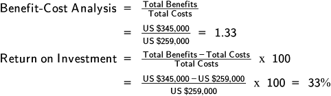
Note the four categories of information for each metric: goal, measure, target, and actual. All four items are necessary. The goal shows the result that should be achieved. All goals included in a scorecard must be measurable. Targets are performance standards that set a value that the measurement should achieve to be considered successful. Some organizations expand this into three categories of targets such as good, better, and best or failing, acceptable, and excelling. The "Actual" column is where actual performance is recorded for a given period. As will be seen in the custom scorecard example to follow, there may be individual columns for multiple periods.
Consider what each perspective adds to a manager's knowledge of his or her area's role in the supply chain:
- Customer perspective. The customer's view of the business clearly has value for assessing the current performance and future prospects of the business. Measures such as on-time delivery or subjective measures such as satisfaction with customer service or impression of reliability are important to track.
- Business process perspective. In a functionally oriented business, this area might focus on number of prospecting calls or productivity. It can also encompass flexible response, waste reduction, or other supply chain management goals.
- Innovation and learning perspective. This area can include formal training for staff, or it can refer to innovations in products or processes (such as adopting a balanced scorecard approach to supply chain management).
Financial perspective. The traditional way of judging business performance relied on such measures as cash-to-cash cycle time, return on investment, and debt-to-equity ratio. But financial measures are retrospective, and they don't always provide a true indication of the current state of affairs, much less of future performance. Kaplan and Norton wanted to give managers a tool that would encourage a broader, more future-oriented view. Nevertheless, a balanced scorecard approach must always include the financial perspective; bottom-line results are still the final measure of success. Also, the measurements used in all four perspectives must ultimately be linked to their financial contribution to the bottom line.
Key Elements in Balanced Scorecard Initiative
Developing a balanced scorecard approach to managing the supply chain requires careful preparation, leadership, and follow-through. Here are some key elements that should be present in a balanced scorecard initiative:
Communicate the strategic purpose of the scorecard to partners. Organizational strategy, let alone supply chain strategy, too often remains in the minds of top executives without being communicated to other levels of management. If managers are to help make change happen, they have to understand why it's good for the business, the customer, their own area, and themselves.
Develop goals and measures consistent with internal and supply chain strategies. There's a temptation to use the balanced scorecard as a brainstorming tool without understanding that the four areas need to be mutually reinforcing and aligned with strategy. They aren't catch-all containers for random suggestions. If the supply strategy is to penetrate a new, high-end market with innovative electronics, then the business process perspective might be to develop a more rapid product innovation cycle linked to measures of process innovation and design workshops in the innovation and learning area, reduced delivery cycles in the customer perspective area, and a profitability measure in the financial area.
Create schedules and assign responsibilities. The BSC requires establishing ownership of results. When an initiative crosses functional areas in one company it is likely to encounter resistance if not coordinated and promoted from above. But in a supply chain comprising different companies, there is no unified "above"; agreement has to be established first at the executive level across the supply chain. Then a reporting structure has to be established across company boundaries. Moreover, there may be obstacles to overcome, such as incompatible systems.
Setting up a balanced scorecard initiative is not a job for novices. The first time around it can be worthwhile to bring in outside expertise. Still, even a highly sophisticated consultant cannot substitute for support at the executive level; outsiders are not always immediately accepted if employees aren't convinced that management is behind the initiative.
Custom Scorecards
Balanced scorecards are designed to be customizable because organizations can specify their own goals and the measures used to achieve each goal. If the four perspectives are not considered useful categories for an organization, organizations often design their own custom scorecards. The benefits are that both the categories used and the individual metrics can be tailored to the needs of the organization and its culture and organizational structure. The drawback is that a custom scorecard may not be as well balanced.
When an organization has key, indispensable suppliers or alliances, it may be best to develop the scorecard in consultation with these organizations rather than handing the results down from above. Suppliers who are involved are more likely to accept the measurements and may be able to provide suggestions or innovations.
Exhibit 2-26 shows a custom scorecard that reflects the unique priorities and measurements that a particular organization uses for one of its 3PL sites.
Note the following points about this scorecard:
- It includes metrics for two suppliers to the 3PL. An organization will likely have multiple scorecards, but suppliers of the same good or service could be shown on the same scorecard for direct comparison.
- Measurements are in numbers and percentages for easy reference.
- The title of the scorecard is "Monthly Quality of Service (QOS) Report." The categories do not have any direct financial measures, which are likely the subject of a different report.
There are seven categories: active suppliers and parts, advanced shipment notification (ASN) compliance, receipts, receipt discrepancies, inventory count, deliveries, and corrective actions. These categories are more of a blend of business process, learning and growth (discrepancies and corrective actions), and customer perspective (the customer being the organization producing the scorecard).
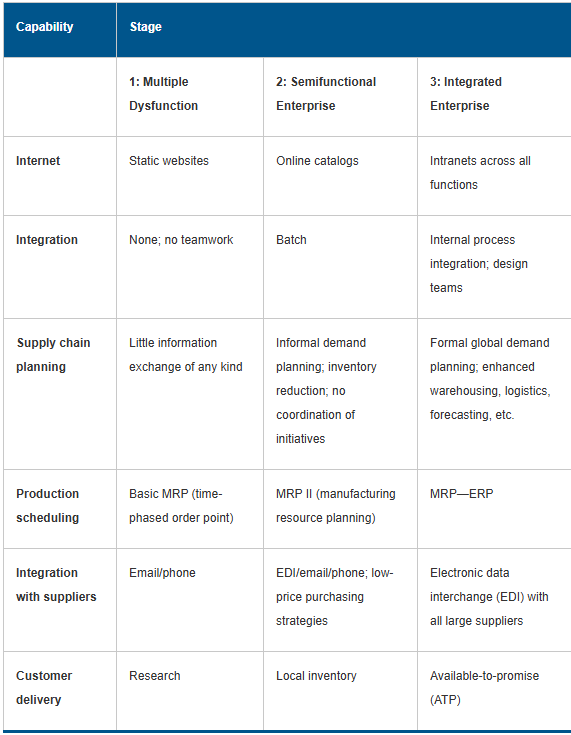
Visual Tools for Scorecards
The custom scorecard in Exhibit 2-27 also contains some visual tools to augment the seven categories of measurements in the previous scorecard. Visual tools such as those shown in Exhibit 2-27 can make some trends obvious.
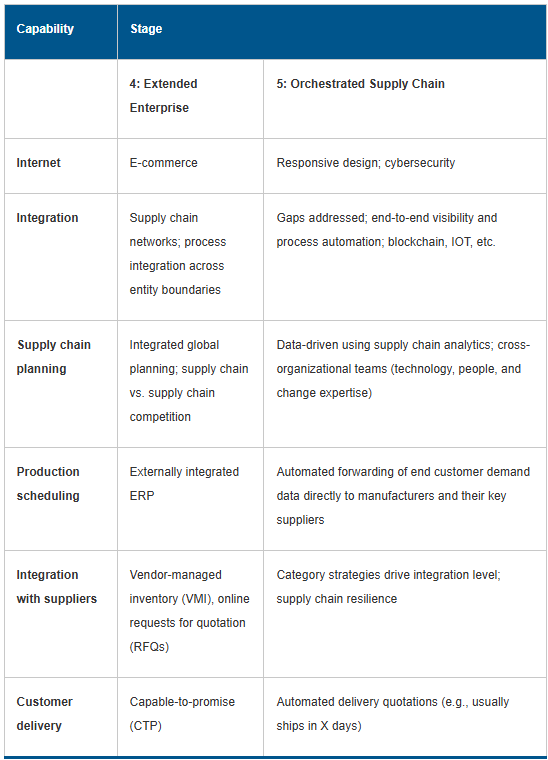
Performance Metrics
This discussion continues the case study for the organization that designed the previous custom scorecard. Performance metrics for its raw material suppliers and its freight forwarders are also in the form of visual graphs and charts that are easy to interpret and easy to discuss with the suppliers. These tools help the organization exercise the proper level of control over its suppliers because problem areas become obvious. Exhibit 2-28 and Exhibit 2-29 are KPIs (key performance indicators) for raw material suppliers; Exhibit 2-30 and Exhibit 2-31 are KPIs for freight forwarders.


Source: Laura Gram
The image is a line chart titled "Containers Bumped" with a target of 0 containers, representing the performance of freight forwarders over a year.
Y-axis: The vertical axis represents the number of containers, ranging from 0 to 9.
X-axis: The horizontal axis is time-based, displaying the months from January to December.
Each point on the line chart represents the number of containers bumped in a particular month, with the line connecting these points to show trends over time. The chart starts with 2 containers bumped in January, drops to 0 in February, then peaks at 9 in April. From there, the trend shows a gradual decline, reaching 0 containers bumped by December.

Source: Laura Gram
Exhibit 2-28 shows months in which there were occurrences of incorrect weight, packaging problems, or damage to raw materials. The categories stack to highlight months when multiple problems occurred. This chart cannot show the magnitude of the problems, only that they exist. Exhibit 2-29 shows that relative to the target shipment booking of 14 days prior to sail date, many suppliers booked shipment with little or no notice. Exhibit 2-30 shows that only in February, November, and December did the freight forwarder meet the target goal of no containers bumped and that April through July may require more serious monitoring in the next year. Exhibit 2-31 shows that the average number of shipments that were not precleared was around 50 percent even though the target was five percent. This may be an area where the measurement and target must be reviewed to see if they are accurate and feasible, which could result in either mandating a supplier process correction or setting a more realistic target.
The key points about supplier scorecards and performance metrics that can be gained from these examples is that rather than just having a few universal ways to measure performance, organizations have many ways. However, organizations should select only measurements that can be objectively gathered, that provide useful information for decision making, and that can be enforced. The standard or target selected should be challenging but realistic. Finally, there is no point in measuring something unless you intend to do something about it if it is significantly or consistently off target (and celebrating it if it exceeds expectations).
Sustainability Scorecards
Many organizations are now presenting their sustainability reports in the form of a sustainability scorecard. Using a scorecard format allows a quick view to compare year-over-year results on key performance metrics.
These scorecards enable organizations to target and track the best opportunities for improvements in energy, water, pollution, and waste reduction targets across their supply chain. They also demonstrate continuous progress toward implementing sustainability plans.
While formats vary across organizations, some examples exist in open format for review and usage. Proctor & Gamble (P&G) has a sustainability scorecard and rating process to measure the environmental performance of its key suppliers. Their scorecard is "open code" for use by any organization to help determine common supply chain evaluation processes across all industries. P&G relied on input from a supplier sustainability board and used protocols set by the World Resources Institute, the World Business Council for Sustainable Development, and the Carbon Disclosure Project. It focuses on year-on-year improvement regardless of the current stage of a supplier's sustainability program.
The P&G scorecard was developed by referencing another example, Walmart's The Sustainability Insight System (THESIS) Index, in which the retailer asks questions about the sustainable practices of its suppliers. This allows them to understand the sustainability hotspots within product categories and rank the suppliers based on information they provide around those hotspots. In 2017, Walmart reached its goal of buying 70 percent of its U.S. goods from suppliers that participate in the index (and can use the index), or 1,300 suppliers. By 2020, this had increased to 1,600 suppliers.
SCOR DS Road Map
The Supply Chain Operations Reference Model (SCOR) has been in use by a wide range of organizations since its introduction in 1996. The Supply Chain Council created it, and in 2014 this council merged with ASCM (formerly APICS). In 2022, SCOR received a major consensus-driven update to represent a wider range of organizations. If you are familiar with the model, note that there are now many differences, including new metrics and codes for metrics. It is now called the SCOR Digital Standard (SCOR DS). The ultimate purpose of SCOR DS is to design supply chains that focus on satisfying customer demand. Anyone who has registered on www.ascm.org can access this model for free.
This model is explored in more detail elsewhere, but it is important here to express that a model such as SCOR DS and its integrated metric trees are essential for making sense out of a complex supply chain.
Exhibit 2-32 shows how SCOR DS uses a symbol of two infinity loops to describe the underlying processes that make up a supply chain.
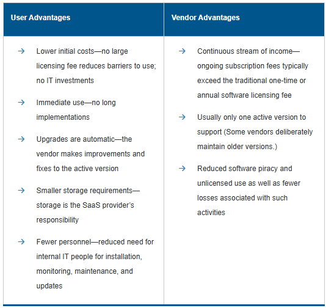
Note that these are processes rather than functions, meaning that the functional areas or persons performing the activity are kept generic.
The concept of a linear supply chain is useful in showing how there are various tiers of suppliers, manufacturers, service providers, distribution centers, retailers, etc., that may be part of a given supply chain. However, a linear supply chain is a limiting concept. Even the term "supply chain" implies a linear flow, and many experts prefer the term "supply network." The infinity loops shown in the SCOR DS process graphic instead imply that a supply chain is actually a never-ending flow of processes that have no artificial beginnings or endings.
The SCOR DS model creates a structure for supply chain communications within your organization, upstream to your suppliers and their suppliers and downstream to your customers and their customers. Every party in the supply chain will have its own set of these processes. A buyer's "source" will be seen as "order" by the supplier. Exhibit 2-33 shows how SCOR DS helps create end-to-end visibility and reinforces the concept of a network of never-ending processes.
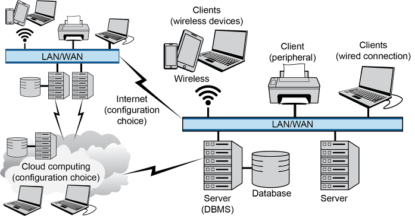
SCOR DS can help transform a supply chain from a linear supply chain into an orchestrated supply chain. Orchestration helps the various tiers of supply chain partners create an effective supply chain by helping to align related process improvements so the organizations can develop compatible processes, metrics, practices, people skills, and technologies. Note how the model is always centered on "your organization" so that you focus on at least two levels out from yourself in each direction (e.g., one of your upstream suppliers will have its own tiers of suppliers and customers and so will place itself in the center of the graphic since it is also a manufacturer in its own right).
This process framework can be used for business process improvement (to capture the as-is and to-be states), performance benchmarking, best practice analysis (practices and technologies that result in significantly better performance and help organizations start out at least even with competitors), and organizational design (assessing skills and staffing needs and aligning this information to internal targets).
Exhibit 2-34 shows how SCOR DS has levels 0 through 4 in its process model. Level 0 is orchestrate. The other six major processes are at level 1 of the hierarchy. Levels 2 and 3 are defined in the model, but level 4 is not. Organizations define this level, and possibly even lower levels, using industry-, organization-, and location-specific processes.
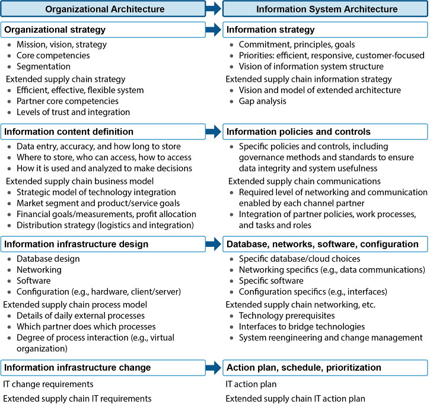
SCOR DS has four major sections that are all interrelated to help define the overall processes in a way that aligns with key business functions and goals. These are:
Performance. Performance attributes are characteristics, such as reliability or responsiveness, that are used to describe a supply chain strategy. Relative to competitors or other benchmark organizations, organizations select attributes to be at superior or advantage performance in priority areas and set lower-priority attributes at equivalent (i.e., parity) performance.
Performance metrics help translate business strategy into supply chain strategy, benchmark against similar supply chains or internal targets, and identify and monitor processes that are the likely cause of performance gaps. Each performance attribute has one or more defined performance metrics at levels 1 through 3 in a key performance indicator (KPI) tree. A KPI tree is a hierarchy of KPIs where each lower-level metric serves as a diagnostic for the higher-level metric. Strategic-level KPIs are often aggregated from more specific tactical- or operational-level related metrics so that tactics and operations tie back to strategic priorities in a measurable way. The metric set as a whole can then measure the ability of processes to achieve the strategic objectives of the prioritized performance attributes. Organizations adapt SCOR DS metrics as needed to allow them to be calculated using the data that are actually available in their databases (or will be after they make improvements).
Processes. Processes are standard descriptions of management processes and relationships (see Exhibit 2-34). Processes help capture the consensus view of the as-is (i.e., what we do and how we do it), the what-if (i.e., scenarios), and the to-be (i.e., what will we do, where and how will we do it) states of processes. Each level of additional hierarchy helps show how individual processes are configured to enable them to be executed. Mapping a process helps focus on its inputs and outputs and its requirements related to skills, performance, capabilities, and best practices. SCOR DS features sample process maps that can be modified as needed. For example, the workflow for the process P1.1 Capture External Market Signals is shown in Exhibit 2-35. Note how the process has one or more input processes (OE1.3 here) and one or more output processes (P1.2 here). Also shown are workflow elements such as market data or market insights.
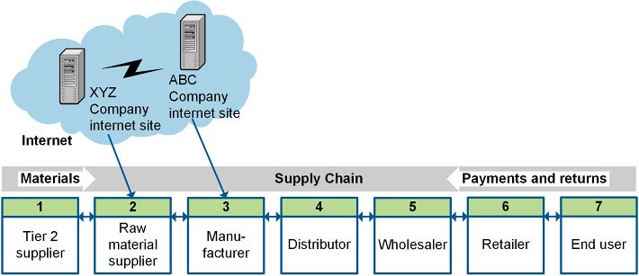
While levels 1, 2, and 3 are industry-neutral (i.e., applicable to any industry), level 4 is industry-specific. That is, organizations develop or select these processes themselves. While level 4 is specified by each organization, the process of linking them to the SCOR DS process hierarchy enables organizations to make their alignment to strategy explicit and measurable.
Practices. Practices are a unique way to configure a process or set of processes based on special skills, automation, software, process sequence, or process integration. Practices that the organization believes will result in significantly better process performance can be added to wish lists or be considered when conducting analysis of alternatives. Other practices might be blacklisted. All practices are now called best practices (single category); organizations decide whether or not a practice is valuable. After narrowing down to viable alternatives (applies to industry and business), the organization may select some low effort/high return practices because they are quick wins but also some high effort/high return elements to enable their strategy. Organizations can also benchmark practices or work to expand some practices to the entire organization. Practices are categorized by these pillars:
Analytics and technology (e.g., BP.049 Lean Planning)
Process (e.g., BP.009 Kanban)
Organization (e.g., BP.160 Lean)
Note that SCOR DS is designed to enable a supply chain digital transformation. SCOR DS includes many practices that might be described as emerging, including blockchain, internet of things, augmented reality, robotic process automation, artificial intelligence, big data analytics, should-cost modeling, predictive analytics, digital twin, smart contracts, advanced data visualization and visibility, real-time location systems, autonomous delivery, stock taking via drones, dynamic inventory management, quick-response codes, mobile distribution centers, machine learning, dynamic routing, virtual reality, and multi-enterprise business networks. These practices are linked to specific supply chain processes. For example, for planning the fulfill process, there are practices such as cross-docking, vendor-managed inventory, or machine learning that could be considered. These practices help show where to leverage each technology.
Another way that SCOR DS helps to create an intelligent supply chain is by linking to a new model called the Digital Capabilities Model for Supply Networks. This model is discussed in its own area.
People. This area helps align staff and staffing needs to internal targets by providing standard skill definitions, experiences, and training as well as standardized skill maturity levels to assess skills and performance needs. Organizations define the needed skill level of a role as they see fit. Competency levels are defined as follows:
- Novice—new to the field or activity, task-oriented, and needs standard/written procedures.
- Beginner—has not mastered work skills, is task-oriented, and has limited "situational perception."
- Competent—goal-oriented and has enough skill to do tasks and set priorities but is still task-oriented; needs an analytical system for decision making.
- Proficient—sees the holistic situation and uses it to set priorities and act from personal knowledge and conviction; decision making is now intuitive but problem recognition still requires measuring rather than intuition.
- Expert—intuitive understanding of the situation and what is possible, able to highlight key points or extend related experience to master new situations; both decision making and problem recognition are intuitive.
- Note that SCOR DS was developed and continues to be improved using a consensus-based process that brings together diverse manufacturers, distributors, and retailers as well as academic and government contributors.
- Note that SCOR DS was developed and continues to be improved using a consensus-based process that brings together diverse manufacturers, distributors, and retailers as well as academic and government contributors.
- SCOR DS does apply to the following activities:
- All customer interactions from order entry through paid invoice
- All product transactions (defined as physical materials and services), including equipment, spare parts, bulk product, and software, among others
- All market interactions from understanding aggregate demand through order fulfillment
- SCOR DS does not apply to the following processes:
Sales and marketing (defined as demand generation)
Research and technology development
Product development
Some elements of post-delivery customer support (but it does include returns as a fundamental process)
The SCOR DS model assumes that the product has already been designed and tested for production. However, the design of a product may significantly influence the functioning of the chain, so supply chain representatives should play a role in the design process.
This course goes into more detail on SCOR DS performance attributes and performance metrics elsewhere. To learn more about SCOR DS in general, start with the SCOR DS website (www.scor.ascm.org). Take the "Free SCOR Course" online tutorial and read the "Introduction to SCOR" document. Then, become even more familiar by navigating through the site, starting with the Performance area.
Supply Chain Performance and the SCOR DS Model
A performance measurement model can be extended to the entire supply chain. Strategies can be set by mutual agreement of all supply chain partners, who then set their individual strategies and tactics to work toward this shared goal. In addition, KPIs can be rolled up to show total supply chain costs, total inventory in the network, total lead time, and so on. These metrics become available only if each supply chain partner agrees to share its summary costs and other metrics. The benefit can be a faster, cheaper, more efficient network that benefits each participant as well as the ultimate customer.
📖 ASCM Definition — Supply Chain Operations Reference (SCOR) model:
Note that the updated SCOR DS processes are orchestrate, plan, source, transform, order, fulfill, and return, but the ASCM Supply Chain Dictionary update for this revision is forthcoming.
SCOR DS has been used by manufacturers around the world to identify—and adhere to—mission-critical supply chain metrics. Once an organization's metrics have been calculated, they are compared against internal standards and possibly industry or best-in-class benchmark data. An organization uses the results to drive performance improvements. Let's take a look at how SCOR DS can be used to set a supply chain strategy and select a complimentary, balanced, and integrated set of metrics to enact that strategy.
SCOR DS Performance Attributes and Supply Chain Strategy
SCOR DS includes a performance section that features a set of performance attributes and metrics in addition to its other sections on processes, practices, and people maturity. SCOR DS performance attributes are "strategic characteristics of supply chain performance used to prioritize and align the supply chain's performance with the business strategy." Performance attributes are grouped into three categories—resilience, economic, and sustainability—as shown in Exhibit 2-36. Note that performance attributes are not metrics themselves but that one or more top-level metrics are tied to each attribute. Definitions are quoted from SCOR DS.
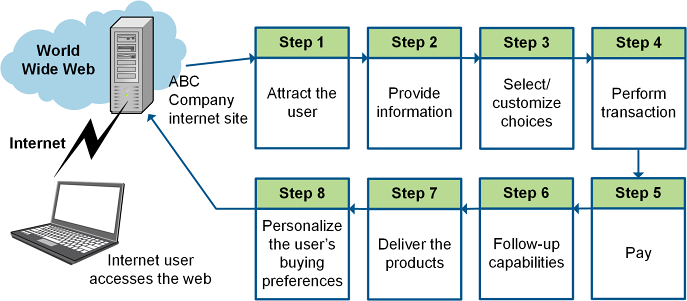
Source: SCOR DS. Used with permission.
An organization can use these performance attributes to set a strategy for a specific supply chain. Typically, a supply chain strategy can only work to be superior (often defined as performing better than 90 percent of competitors) in one attribute, work toward advantage (better than 70 percent of competitors) in two or possibly three attributes, and the remaining attributes need to be set at parity (better than 50 percent of competitors).
For example, for a supply chain that focuses on reliable repackaging and delivery of low-margin products to retail stores, market analysis could show that customer and internal profitability requirements point to making the assets attribute be set at superior due to the low margins. The same supply chain might set reliability, cost, and social at advantage (for various reasons) and set the other attributes at parity (lower priority, but not ignored). Then it can select related metrics for each attribute as will be discussed shortly. Because SCOR DS is a standard developed by wide industry participation, benchmark metrics are readily available. Given the supply chain's set of priorities and metrics, organizations can then use benchmarking to determine the size of the gaps from these supply chain priorities, as is shown in Exhibit 2-37.
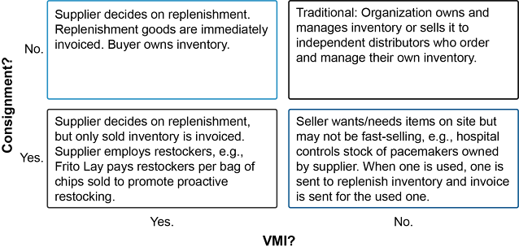
Note that this is a mockup of a SCORmark benchmarking tool. SCORmark is a PriceWaterhouseCoopers (PwC) tool offered through ASCM Corporate Development that uses SCOR DS metrics based on PwC's data set of over 1,000 organizations and 2,000 supply chains.
SCOR DS Metrics
📖 ASCM Definition — SCOR metrics:
While the performance attributes themselves are not metrics, each has one or more level 1 metrics. Exhibit 2-38 shows the SCOR DS metrics at level 1 plus the codes for level 2 metrics with shorthand references to these metrics (see the SCOR DS website for full names.) Note how each metric starts with a two-letter code followed by a level and unique identifier. For example, RL.2.4 is a level 2 reliability metric.
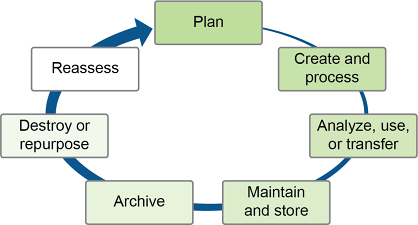
Source: SCOR DS. Used with permission.
Exhibit 2-39 illustrates how the SCOR DS metrics for perfect customer order fulfillment cascade from one level to the next.
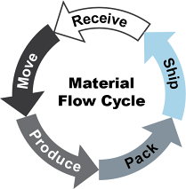
SCOR DS also provides standard definitions of each metric, which is critical to the process because it forces everyone to adopt a shared understanding of the metric's inputs, process, and output.
The selection of metrics depends upon the supply chain strategy; there is no requirement, for example, that all the metrics for a particular SCOR DS level have to be applied simultaneously. In fact, the opposite is more likely to be true. Achieving greater overall velocity might require that one link in the chain actually underperform in the interest of boosting performance elsewhere. Shipping might have to rely on more expensive transportation, for example. These tradeoffs have to be carefully negotiated with those involved, and rewards may have to be shared in such a way that the interest of each stakeholder is brought into alignment with that of the overall enterprise. Strong leadership from above is paramount. A pilot project is helpful if it starts at the most manageable level and has a good chance of quick success. Applying one metric across two or three supply chain partners is not too modest a project.
Despite the large list of potential metrics and measurements available, each organization needs to understand its own standards and strategic goals and select the performance metrics that most closely align with them. Here are some general principles for selecting metrics from this or another list:
- Select at least one level 1 or equivalent top-level metric from each category of attributes, such as one KPI for reliability, one for responsiveness, and so on.
- For each chosen metric, select some or all supporting metrics one level down (level 2 in SCOR DS).
- Verify that the set of metrics reflects the organization's strategic imperatives and critical performance gaps, which could involve selecting more than one metric in the same attribute category as needed.
- Adapt these metrics to the data that are available in the ERP system. Note, however, that many ERP systems have adopted the SCOR DS methodology as part of their process framework.
SCOR DS metrics are comprehensive and can be used to measure success against competitive priorities. SCOR DS metrics help trace metrics between strategic, tactical, and operational levels of detail. The operational level is where plans are refined and executed at the most granular level. Metrics must also flow from the overall organizational measures to specific detailed process and functional area measures. At the operational level, the performance objectives are refined. The SCOR DS model metrics were developed with the objective of being able to "drill down" from organizational-level performance to the process and sub-process metrics that contribute to that performance.
Generic Performance Objectives Versus SCOR DS Performance Attributes
Exhibit 2-40 shows some typical metrics that relate to the generic performance metrics of speed, dependability, flexibility, quality, and cost. While there isn't a direct match-up between the generic performance objectives and the SCOR DS metrics, the following observations can be made:
Speed and SCOR DS's responsiveness are closely aligned
Dependability and quality both relate to SCOR DS's reliability
Flexibility relates to SCOR DS's agility
Cost relates to SCOR DS's cost as well as assets (i.e., asset management)
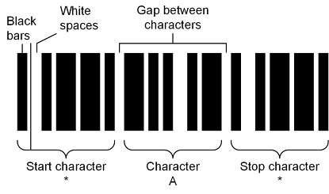
Level 1 SCOR DS Metrics
Level 1 SCOR DS metrics fall into the performance attribute categories of resilience (reliability, responsiveness, and agility), economic (cost, profit, and assets), and sustainability (environmental and social).
We will go through the metrics for each performance attribute next.
Resilience Metrics: Reliability
📖 ASCM Definition — perfect order fulfillment:
1) An order in which the seven Rs—the right product, the right quantity, the right condition, the right place, the right time, the right customer, and the right cost—are satisfied. 2) A fulfillment metric used to measure order proficiency, including being on time, complete, accurate, and undamaged.
In short, it is the percentage of orders meeting delivery performance with complete and accurate documentation and no delivery damage or defects.
Components of a perfect order include all items and quantities, so any late items or any items delivered in the wrong amount would violate the requirements of a perfect order. The definition of "on time" has to come from the customer. Documentation includes all packing slips, bills of lading, invoices, etc.
A perfect order must satisfy all of the following conditions:
- A product is considered perfect if the product ordered is the product provided.
- A quantity is considered perfect if the product ordered is provided in the ordered quantity.
- A delivery is considered perfect if the location and delivery time ordered are met upon receipt.
- A customer order is considered perfect if the product is delivered to the specified entity.
- Documentation supporting the order is considered perfect if it is all accurate, complete, and on time.
- The product condition is considered perfect if the product is delivered and faultlessly installed (as applicable) according to specifications with no damage, is customer-ready, and is accepted by the customer.
- The calculation for perfect customer order fulfillment is as follows:
Resilience Metrics: Responsiveness
The customer order fulfillment cycle time metric is the only Level 1 measure of supply chain responsiveness. The SCOR DS website defines customer order fulfillment cycle time (order fulfillment lead time or customer order cycle time), RS.1.1., as follows:
- The average actual cycle time consistently achieved to fulfill customer orders. For each individual order, this cycle time starts at the order receipt and ends at customer acceptance of the order.
- Since it is an average, cycle time for individual orders may vary.
- Customer order fulfillment cycle time is calculated as follows (in days):
Customer order fulfillment cycle time is called a gross cycle time metric, meaning that there may be some dwell time included in this metric in addition to the customer order fulfillment process time (all value-added or non-value-added activities performed during the cycle). The SCOR DS website defines order fulfillment dwell time as "any lead time created by the customer during the order fulfillment process during which no activity takes place." Dwell time is created by customers placing orders earlier than necessary, such as an order placed 14 days before the desired fulfillment date, even though it only takes the organization 6 days to fulfill the order. Here, the gross cycle time is 14 days. For this reason, a gross cycle time metric does not truly reflect the organization's responsiveness. Rather than trying to get customers to place orders exactly on time, organizations should view earlier-than-needed ordering as a benefit because it enables optimization of multiple orders.
Separating out the net component from the gross requirement involves measuring each time period separately, as shown below (note the SCOR DS code for order fulfillment dwell time has been added).
The organization can then subtract the order fulfillment dwell time from the customer order fulfillment cycle time to find customer order fulfillment process time. Customer order fulfillment process time is the preferred way to measure the organization's responsiveness. Note that if the organization does not track dwell time, then the gross metric will equal the customer order fulfillment process time.
Note that order fulfillment dwell time should never be allowed to include non-value-added lead time or idle time. These are instead included in customer order fulfillment process time as these are inefficiencies in the process that can be sought out and reduced or eliminated.
Resilience Metrics: Agility
Agility in the supply chain is its ability to respond to market changes and remain competitive. The Level 1 metric for this is AG.1.1. Supply Chain Agility, and the Level 2 metrics are agility for order, source, transform, fulfill, and return, respectively. Agility in total or for one of these subsets can be measured in two basic ways:
- Strategic Supply Chain Agility (days): Number of days to meet a 25 percent unplanned change in demand
- To calculate the Level 1 metric, sum the planned lead times for source, transform, order, fulfill, and plan
- Operational Supply Chain Agility (percentage increase/decrease): The sustained percentage increase or decrease in quantities that can be achieved over the operational planning horizon (commonly this is 30 to 60 days)
- To calculate, assume no expedite costs, and apply the following formula:
Economic Metrics: Cost
The economic metrics for a supply chain can be complex. The measures that the CFO of a large company focuses on may be different than those that are pivotal to supply chain managers. There are two cost metrics at Level 1 for measuring the costs of operating the supply chain: total supply chain management cost (TSCMC) and cost of goods sold (COGS).
CO.1.1. Total Supply Chain Management Cost
Per the SCOR DS web site, the total supply chain management cost is "calculated as the total cost to manage order processing, acquire materials, manage inventory, and manage supply-chain finance, planning, and IT costs, as represented as a percent of revenue." The calculation for total supply chain management cost as a percent of revenue is to combine the Level 2 costs and divide by total product revenue: (CO.2.1 + CO.2.2 + CO.2.3 + CO.2.4 + CO.2.5)/Total Product Revenue. Spelled out this is:
CO.1.2 Cost of Goods Sold (COGS)
📖 ASCM Definition — cost of goods sold (COGS):
SCOR DS defines direct material, direct labor, and indirect costs related to production only at a high level since there are many ways to define each of these categories.
Economic Metrics: Profit
Profit metrics include the following:
PR.1.1 Earnings Before Interest and Taxes (EBIT) as a Percent of Revenue
PR.1.2 Effective Tax Rate
EBIT measures the organization's earning power from ongoing operations before interest payments or income taxes are factored in. EBIT as a percent of revenue is calculated as follows:
The effective tax rate is the average tax rate paid by the organization. SCOR DS notes that a tax-efficient supply chain can significantly impact this rate.
Economic Metrics: Assets
Metrics related to the supply chain's effective use of resources, including fixed and working capital, are the cash-to-cash cycle time, return on fixed assets, and return on working capital.
AM.1.1 Cash-to-Cash Cycle Time
Cash-to-cash cycle time is defined as the time it takes for an investment to flow back into a company after it has been spent for raw materials. It is a continuous measure of how many days the organization's working capital is invested in managing the supply chain. The data needed to calculate cash-to-cash cycle time (average inventory, accounts receivable, and accounts payable) can be found on the balance sheet (statement of financial position). Cash-to-cash cycle time is calculated as follows:
- Each of the items used in this calculation can be determined as follows:
- The ASCM Supply Chain Dictionary has some relevant definitions:
- Days' outstanding. A term used to imply the amount of an asset or liability measured in days of sales. For example, accounts payable days are the typical number of days that a firm delays payments of invoices to its suppliers.
- Days' sales outstanding. A measure of the average number of days that a company takes to collect revenue after a sale has been made, calculated as the total accounts receivable divided by the average daily sales rate. [Also called accounts receivable days.]
- Days of supply. 1) Inventory-on-hand metric converted from units to how long the units will last. For example, if there are 2,000 units on hand and the company is using 200 per day, then there are 10 days of supply. 2) A financial measure of the value of all inventory in the supply chain divided by the average daily cost of goods sold rate.
- Cash is tied up in the system by the difference between amounts owed to the organization and amounts still owed to others plus inventory. Reducing inventory will directly reduce the cash-to-cash cycle time, thus increasing cash flow.
- For example, if a supply chain has 60 inventory days of supply, 40 days of sales outstanding, and 45 days of payables, its cash-to-cash cycle time is 55 days.
The three elements of the cash-to-cash cycle reflect the impact of supply chain management on the company's cash position. Negative indicators include high levels of inventory, high days of sales (receivables) outstanding (it's taking a long time to get paid), or low levels of payables (the company is not benefiting from keeping money invested as long as possible before making payments). If unnecessarily high inventory levels are the problem, the company can reduce the cycle time by improved forecasting and just-in-time (JIT) initiatives to reduce inventory (consistent with avoiding stockouts).
Cash-to-cash cycle time is considered to be an important indicator of a company's health. The faster the cycle, the healthier the company.
Cash-to-cash cycle time is considered to be an important indicator of a company's health. The faster the cycle, the healthier the company. A fast cycle indicates effective management of cash flow to maximize the use of the cash and to reduce working capital requirements.
However, what is considered a normal duration for the cash-to-cash cycle time will differ by supply chain, industry, and organizational strategy. Even within a given industry, one organization may have owned less of its inventory than another due to heavier use of strategies such as vendor-managed inventory (VMI) or consignment. VMI helps to lower the inventory in the pipeline by sharing information between the links in the supply chain. Consignment stock postpones the handoff of ownership. Similarly, an organization that is vertically integrated will own its inventory for much longer than one in a horizontal supply chain. Therefore, it is not necessarily possible to compare cycle times without understanding the relevant strategies for each business. An organization's cycle time can always be a benchmark for its own continuous improvement.
One advantage of using this metric is that it can be easily benchmarked to information found in public financial statements such as those of a competitor. Note that while cash-to-cash cycle time can be calculated using historical data, a preferred method for supply chain management is to base the calculations on five-point rolling averages as stated in the above equations.
AM.1.2 Return on Fixed Assets
📖 ASCM Definition — return on supply chain fixed assets:
For example, if supply chain revenue is US$1,000,000, total supply chain management costs are US$850,000, and supply chain fixed assets cost US$600,000, then the return on fixed assets is 25 percent.
AM.1.3 Return on Working Capital
📖 ASCM Definition — return on working capital:
Return on working capital assesses the magnitude of an investment relative to a company's working capital position versus the revenue generated from a supply chain. Components include accounts receivable (A/R), accounts payable (A/P), inventory, supply chain revenue, cost of goods sold, and supply chain management costs.
The calculation for return on working capital is as follows (note that in this calculation TSCMC is not expressed as a percent of revenue):
Sustainability Metrics: Environmental
Environmental metrics include metrics for
EV.1.1 Materials Used, which is the total weight or volume of materials that are used to produce and package main products and services. It has renewable and nonrenewable Level 2 metric subsets.
EV.1.2 Energy Consumed, which is total energy consumption at the organization in joules or multiples thereof. It also has renewable and nonrenewable subsets.
EV.1.3 Water Consumed, which is total water consumption in mega-liters. It has water withdrawal and water discharged subsets.
EV.1.4 GHG Emissions, which is greenhouse gas emissions measured as metric tons of equivalent CO2 in Scope 1 (direct emissions), Scope 2 (energy indirect), and Scope 3 (other indirect) Level 2 subsets.
EV.1.5 Waste Generated, which is the total weight of waste generated in metric tons. Its Level 2 subsets include generated waste diverted from disposal and directed to disposal.
Sustainability Metrics: Social
Social metrics include the following (these do not have Level 2 metrics):
- SC.1.1 Diversity and Inclusion, which is measured as the percentage of individuals in the organization's governance bodies per gender, age group, and other diversity indicators.
- SC.1.2 Wage Level, which is the ratio of entry level wage by gender at significant locations of operations to the minimum wage.
- SC.1.3 Training, which is the number of hours training per gender per employee category.
Digital Capabilities Model for Supply Networks
📖 ASCM Definition — Digital Capabilities Model (DCM):
📖 ASCM Definition — capabilities:
One way to determine how exactly to transform to higher levels of supply chain maturity is to first establish the necessary advanced capabilities based on customer and other requirements. Then, work backward from these desired capabilities to determine the processes, programs, people skills, and technologies that will enable those capabilities.
The DCM helps translate a supply chain into a holistic network view that focuses on the interconnectedness between its six level 1 capabilities and the flow of information across these capabilities, as shown in Exhibit 2-41. Note that because the model is relational, it is best viewed by going to dcm.ascm.org.
Here is a brief overview of each of the capabilities:
- Connected customer. This is about creating a seamless customer experience throughout the customer life cycle, which ranges from inspiration at the beginning of the model to service at the end of the model.
- Product development. This is about optimizing product life cycle management using proactive planning and emerging technologies.
- Synchronized planning. This is about making planning significantly more efficient by leveraging human and process capabilities like information sharing.
- Intelligent supply. This is about leveraging emerging technologies to reduce costs.
- Smart operations. This is about bringing operations into the digital transformation by increasing connectivity, agility, and proactivity.
- Dynamic fulfillment. This is about providing speed and agility to order fulfillment to increase customer service.
This model integrates well with SCOR DS. SCOR DS's orchestrate process links to all of these capabilities (and it is the only SCOR DS process that maps to connected customer and product development). Plan maps to synchronized planning, source maps to intelligent supply, transform maps to smart operations, order maps to connected customer, and both fulfill and return map to dynamic fulfillment.
Rather than focusing on the linear relationships of a traditional supply chain, the capabilities in this model are presented as a network. This shows how the capabilities are interrelated and how a digitized supply chain no longer needs to be linear in every case but could use various enabling processes (including emerging technologies) to skip some processes or do them in a different order. For example, 3D printing can skip the source process or sensor-driven replenishment can directly feed data into the plan process.
Organizations should prioritize various capabilities as needed to fit their strategy or to address gaps.
Organizations should prioritize various capabilities as needed to fit their strategy or to address gaps. Like SCOR DS, the Digital Capabilities Model contains more than one level. At the top level are the capabilities. At the second level, there are subsets of these capabilities that help clarify the top level capability and how to use the capability to differentiate the organization from less mature traditional supply chains. For example, connected customer has seven supporting capabilities: product as a service (PAAS), connected field services, self-service, customized experience, customer issue management, intelligent product tracking, and monitoring and insights.